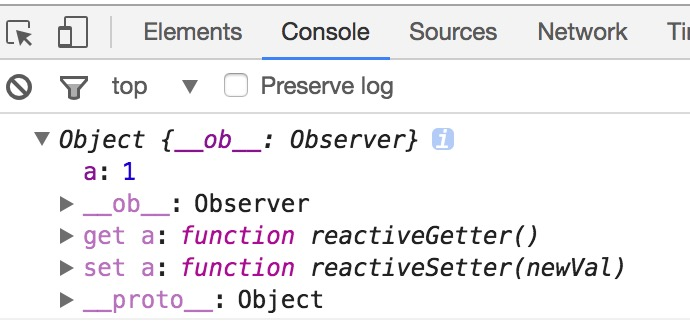
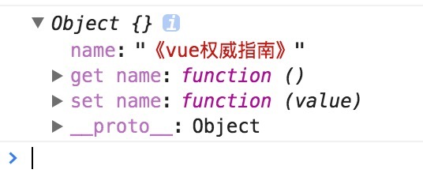

# vue数据双向绑定原理
文章原地址：https://www.cnblogs.com/libin-1/p/6893712.html
vue数据双向绑定是通过数据劫持,结合发布者-订阅者模式的方式来实现的，那么vue是如果进行数据劫持的，我们可以先来看一下通过控制台输出一个定义在vue初始化数据上的对象是个什么东西。
var vm = new Vue({
data: {
obj: {
a: 1
}
},
created: function () {
console.log(this.obj);
}
});
结果：

我们可以看到属性a有两个相对应的get和set方法，为什么会多出这两个方法呢？因为vue是通过Object.defineProperty()来实现数据劫持的。
Object.defineProperty( )是用来做什么的？它可以来控制一个对象属性的一些特有操作，比如读写权、是否可以枚举，这里我们主要先来研究下它对应的两个描述属性get和set，如果还不熟悉其用法，请点击这里阅读更多用法。
在平常，我们很容易就可以打印出一个对象的属性数据：
var Book = {
name: 'vue权威指南'
};
console.log(Book.name); // vue权威指南
如果想要在执行console.log(book.name)的同时，直接给书名加个书名号，那要怎么处理呢？或者说要通过什么监听对象 Book 的属性值。这时候Object.defineProperty( )就派上用场了，代码如下：
var Book = {}
var name = '';
Object.defineProperty(Book, 'name', {
set: function (value) {
name = value;
console.log('你取了一个书名叫做' + value);
},
get: function () {
return '《' + name + '》'
}
})
Book.name = 'vue权威指南'; // 你取了一个书名叫做vue权威指南
console.log(Book.name); // 《vue权威指南》
我们通过Object.defineProperty( )设置了对象Book的name属性，对其get和set进行重写操作，顾名思义，get就是在读取name属性这个值触发的函数，set就是在设置name属性这个值触发的函数，所以当执行 Book.name = 'vue权威指南' 这个语句时，控制台会打印出 "你取了一个书名叫做vue权威指南"，紧接着，当读取这个属性时，就会输出 "《vue权威指南》"，因为我们在get函数里面对该值做了加工了。如果这个时候我们执行下下面的语句，控制台会输出什么？
console.log(Book);
结果：

是不是跟我们在上面打印vue数据长得有点类似，说明vue确实是通过这种方法来进行数据劫持的。接下来我们通过其原理来实现一个简单版的mvvm双向绑定代码。
思路分析 #
实现mvvm主要包含两个方面，数据变化更新视图，视图变化更新数据：

关键点在于data如何更新view，因为view更新data其实可以通过事件监听即可，比如input标签监听 'input' 事件就可以实现了。所以我们着重来分析下，当数据改变，如何更新视图的。
数据更新视图的重点是如何知道数据变了，只要知道数据变了，那么接下去的事都好处理。如何知道数据变了，其实上文我们已经给出答案了，就是通过Object.defineProperty( )对属性设置一个set函数，当数据改变了就会来触发这个函数，所以我们只要将一些需要更新的方法放在这里面就可以实现data更新view了。

实现过程 #
我们已经知道实现数据的双向绑定，首先要对数据进行劫持监听，所以我们需要设置一个监听器Observer，用来监听所有属性。如果属性发上变化了，就需要告诉订阅者Watcher看是否需要更新。因为订阅者是有很多个，所以我们需要有一个消息订阅器Dep来专门收集这些订阅者，然后在监听器Observer和订阅者Watcher之间进行统一管理的。接着，我们还需要有一个指令解析器Compile，对每个节点元素进行扫描和解析，将相关指令对应初始化成一个订阅者Watcher，并替换模板数据或者绑定相应的函数，此时当订阅者Watcher接收到相应属性的变化，就会执行对应的更新函数，从而更新视图。因此接下去我们执行以下3个步骤，实现数据的双向绑定：
1. 实现一个监听器Observer，用来劫持并监听所有属性，如果有变动的，就通知订阅者。
2. 实现一个订阅者Watcher，可以收到属性的变化通知并执行相应的函数，从而更新视图。
3. 实现一个解析器Compile，可以扫描和解析每个节点的相关指令，并根据初始化模板数据以及初始化相应的订阅器。
流程图如下：

- 实现一个Observer
Observer是一个数据监听器，其实现核心方法就是前文所说的Object.defineProperty( )。如果要对所有属性都进行监听的话，那么可以通过递归方法遍历所有属性值，并对其进行Object.defineProperty( )处理。如下代码，实现了一个Observer。
function defineReactive(data, key, val) {
observe(val); // 递归遍历所有子属性
Object.defineProperty(data, key, {
enumerable: true,
configurable: true,
get: function() {
return val;
},
set: function(newVal) {
val = newVal;
console.log('属性' + key + '已经被监听了，现在值为：“' + newVal.toString() + '”');
}
});
}
function observe(data) {
if (!data || typeof data !== 'object') {
return;
}
Object.keys(data).forEach(function(key) {
defineReactive(data, key, data[key]);
});
};
var library = {
book1: {
name: ''
},
book2: ''
};
observe(library);
library.book1.name = 'vue权威指南'; // 属性name已经被监听了，现在值为：“vue权威指南”
library.book2 = '没有此书籍'; // 属性book2已经被监听了，现在值为：“没有此书籍”
从代码上看，我们将订阅器Dep添加一个订阅者设计在getter里面，这是为了让Watcher初始化进行触发，因此需要判断是否要添加订阅者，至于具体设计方案，下文会详细说明的。在setter函数里面，如果数据变化，就会去通知所有订阅者，订阅者们就会去执行对应的更新的函数。到此为止，一个比较完整Observer已经实现了，接下来我们开始设计Watcher。
2. 实现Watcher
订阅者Watcher在初始化的时候需要将自己添加进订阅器Dep中，那该如何添加呢？我们已经知道监听器Observer是在get函数执行了添加订阅者Wather的操作的，所以我们只要在订阅者Watcher初始化的时候出发对应的get函数去执行添加订阅者操作即可，那要如何触发get的函数，再简单不过了，只要获取对应的属性值就可以触发了，核心原因就是因为我们使用了Object.defineProperty( )进行数据监听。这里还有一个细节点需要处理，我们只要在订阅者Watcher初始化的时候才需要添加订阅者，所以需要做一个判断操作，因此可以在订阅器上做一下手脚：在Dep.target上缓存下订阅者，添加成功后再将其去掉就可以了。订阅者Watcher的实现如下：
function Watcher(vm, exp, cb) {
this.cb = cb;
this.vm = vm;
this.exp = exp;
this.value = this.get(); // 将自己添加到订阅器的操作
}
Watcher.prototype = {
update: function() {
this.run();
},
run: function() {
var value = this.vm.data[this.exp];
var oldVal = this.value;
if (value !== oldVal) {
this.value = value;
this.cb.call(this.vm, value, oldVal);
}
},
get: function() {
Dep.target = this; // 缓存自己
var value = this.vm.data[this.exp] // 强制执行监听器里的get函数
Dep.target = null; // 释放自己
return value;
}
};
这时候，我们需要对监听器Observer也做个稍微调整，主要是对应Watcher类原型上的get函数。需要调整地方在于defineReactive函数：
function defineReactive(data, key, val) {
observe(val); // 递归遍历所有子属性
var dep = new Dep();
Object.defineProperty(data, key, {
enumerable: true,
configurable: true,
get: function() {
if (Dep.target) {. // 判断是否需要添加订阅者
dep.addSub(Dep.target); // 在这里添加一个订阅者
}
return val;
},
set: function(newVal) {
if (val === newVal) {
return;
}
val = newVal;
console.log('属性' + key + '已经被监听了，现在值为：“' + newVal.toString() + '”');
dep.notify(); // 如果数据变化，通知所有订阅者
}
});
}
Dep.target = null;
到此为止，简单版的Watcher设计完毕，这时候我们只要将Observer和Watcher关联起来，就可以实现一个简单的双向绑定数据了。因为这里没有还没有设计解析器Compile，所以对于模板数据我们都进行写死处理，假设模板上又一个节点，且id号为'name'，并且双向绑定的绑定的变量也为'name'，且是通过两个大双括号包起来（这里只是为了掩饰，暂时没什么用处），模板如下：
<body>
<h1 id="name">{{name}}</h1>
</body>
这时候我们需要将Observer和Watcher关联起来：
function SelfVue (data, el, exp) {
this.data = data;
observe(data);
el.innerHTML = this.data[exp]; // 初始化模板数据的值
new Watcher(this, exp, function (value) {
el.innerHTML = value;
});
return this;
}
然后在页面上new以下SelfVue类，就可以实现数据的双向绑定了：
<body>
<h1 id="name">{{name}}</h1>
</body>
<script src="js/observer.js"></script>
<script src="js/watcher.js"></script>
<script src="js/index.js"></script>
<script type="text/javascript">
var ele = document.querySelector('#name');
var selfVue = new SelfVue({
name: 'hello world'
}, ele, 'name');
window.setTimeout(function () {
console.log('name值改变了');
selfVue.data.name = 'canfoo';
}, 2000);
</script>
这时候打开页面，可以看到页面刚开始显示了是'hello world'，过了2s后就变成'canfoo'了。到这里，总算大功告成一半了，但是还有一个细节问题，我们在赋值的时候是这样的形式 ' selfVue.data.name = 'canfoo' ' 而我们理想的形式是' selfVue.name = 'canfoo' '为了实现这样的形式，我们需要在new SelfVue的时候做一个代理处理，让访问selfVue的属性代理为访问selfVue.data的属性，实现原理还是使用Object.defineProperty( )对属性值再包一层：
function SelfVue (data, el, exp) {
var self = this;
this.data = data;
Object.keys(data).forEach(function(key) {
self.proxyKeys(key); // 绑定代理属性
});
observe(data);
el.innerHTML = this.data[exp]; // 初始化模板数据的值
new Watcher(this, exp, function (value) {
el.innerHTML = value;
});
return this;
}
SelfVue.prototype = {
proxyKeys: function (key) {
var self = this;
Object.defineProperty(this, key, {
enumerable: false,
configurable: true,
get: function proxyGetter() {
return self.data[key];
},
set: function proxySetter(newVal) {
self.data[key] = newVal;
}
});
}
}
这下我们就可以直接通过' selfVue.name = 'canfoo' '的形式来进行改变模板数据了。如果想要迫切看到现象的童鞋赶快来获取代码！
3. 实现Compile
虽然上面已经实现了一个双向数据绑定的例子，但是整个过程都没有去解析dom节点，而是直接固定某个节点进行替换数据的，所以接下来需要实现一个解析器Compile来做解析和绑定工作。解析器Compile实现步骤：
1.解析模板指令，并替换模板数据，初始化视图
2.将模板指令对应的节点绑定对应的更新函数，初始化相应的订阅器
为了解析模板，首先需要获取到dom元素，然后对含有dom元素上含有指令的节点进行处理，因此这个环节需要对dom操作比较频繁，所有可以先建一个fragment片段，将需要解析的dom节点存入fragment片段里再进行处理：
function nodeToFragment (el) {
var fragment = document.createDocumentFragment();
var child = el.firstChild;
while (child) {
// 将Dom元素移入fragment中
fragment.appendChild(child);
child = el.firstChild
}
return fragment;
}
接下来需要遍历各个节点，对含有相关指定的节点进行特殊处理，这里咱们先处理最简单的情况，只对带有 '{{变量}}' 这种形式的指令进行处理，先简道难嘛，后面再考虑更多指令情况：
function compileElement (el) {
var childNodes = el.childNodes;
var self = this;
[].slice.call(childNodes).forEach(function(node) {
var reg = /\{\{(.*)\}\}/;
var text = node.textContent;
if (self.isTextNode(node) && reg.test(text)) { // 判断是否是符合这种形式{{}}的指令
self.compileText(node, reg.exec(text)[1]);
}
if (node.childNodes && node.childNodes.length) {
self.compileElement(node); // 继续递归遍历子节点
}
});
},
function compileText (node, exp) {
var self = this;
var initText = this.vm[exp];
this.updateText(node, initText); // 将初始化的数据初始化到视图中
new Watcher(this.vm, exp, function (value) { // 生成订阅器并绑定更新函数
self.updateText(node, value);
});
},
function (node, value) {
node.textContent = typeof value == 'undefined' ? '' : value;
}
获取到最外层节点后，调用compileElement函数，对所有子节点进行判断，如果节点是文本节点且匹配{{}}这种形式指令的节点就开始进行编译处理，编译处理首先需要初始化视图数据，对应上面所说的步骤1，接下去需要生成一个并绑定更新函数的订阅器，对应上面所说的步骤2。这样就完成指令的解析、初始化、编译三个过程，一个解析器Compile也就可以正常的工作了。为了将解析器Compile与监听器Observer和订阅者Watcher关联起来，我们需要再修改一下类SelfVue函数：
function SelfVue (options) {
var self = this;
this.vm = this;
this.data = options;
Object.keys(this.data).forEach(function(key) {
self.proxyKeys(key);
});
observe(this.data);
new Compile(options, this.vm);
return this;
}
更改后，我们就不要像之前通过传入固定的元素值进行双向绑定了，可以随便命名各种变量进行双向绑定了：
<body>
<div id="app">
<h2>{{title}}</h2>
<h1>{{name}}</h1>
</div>
</body>
<script src="js/observer.js"></script>
<script src="js/watcher.js"></script>
<script src="js/compile.js"></script>
<script src="js/index.js"></script>
<script type="text/javascript">
var selfVue = new SelfVue({
el: '#app',
data: {
title: 'hello world',
name: ''
}
});
window.setTimeout(function () {
selfVue.title = '你好';
}, 2000);
window.setTimeout(function () {
selfVue.name = 'canfoo';
}, 2500);
</script>
如上代码，在页面上可观察到，刚开始titile和name分别被初始化为 'hello world' 和空，2s后title被替换成 '你好' 3s后name被替换成 'canfoo' 了。废话不多说，再给你们来一个这个版本的代码（v2），获取代码！
到这里，一个数据双向绑定功能已经基本完成了，接下去就是需要完善更多指令的解析编译，在哪里进行更多指令的处理呢？答案很明显，只要在上文说的compileElement函数加上对其他指令节点进行判断，然后遍历其所有属性，看是否有匹配的指令的属性，如果有的话，就对其进行解析编译。这里我们再添加一个v-model指令和事件指令的解析编译，对于这些节点我们使用函数compile进行解析处理：
function compile (node) {
var nodeAttrs = node.attributes;
var self = this;
Array.prototype.forEach.call(nodeAttrs, function(attr) {
var attrName = attr.name;
if (self.isDirective(attrName)) {
var exp = attr.value;
var dir = attrName.substring(2);
if (self.isEventDirective(dir)) { // 事件指令
self.compileEvent(node, self.vm, exp, dir);
} else { // v-model 指令
self.compileModel(node, self.vm, exp, dir);
}
node.removeAttribute(attrName);
}
});
}
上面的compile函数是挂载Compile原型上的，它首先遍历所有节点属性，然后再判断属性是否是指令属性，如果是的话再区分是哪种指令，再进行相应的处理，处理方法相对来说比较简单，这里就不再列出来，想要马上看阅读代码的同学可以马上点击这里获取。
最后我们在稍微改造下类SelfVue，使它更像vue的用法：
function SelfVue (options) {
var self = this;
this.data = options.data;
this.methods = options.methods;
Object.keys(this.data).forEach(function(key) {
self.proxyKeys(key);
});
observe(this.data);
new Compile(options.el, this);
options.mounted.call(this); // 所有事情处理好后执行mounted函数
}
这时候我们可以来真正测试了，在页面上设置如下东西：
<body>
<div id="app">
<h2>{{title}}</h2>
<input v-model="name">
<h1>{{name}}</h1>
<button v-on:click="clickMe">click me!</button>
</div>
</body>
<script src="js/observer.js"></script>
<script src="js/watcher.js"></script>
<script src="js/compile.js"></script>
<script src="js/index.js"></script>
<script type="text/javascript">
new SelfVue({
el: '#app',
data: {
title: 'hello world',
name: 'canfoo'
},
methods: {
clickMe: function () {
this.title = 'hello world';
}
},
mounted: function () {
window.setTimeout(() => {
this.title = '你好';
}, 1000);
}
});
</script>
是不是看起来跟vue的使用方法一样，哈，真正的大功告成！想要代码，直接点击这里获取！现象还没描述？直接上图！！！请观赏
demo